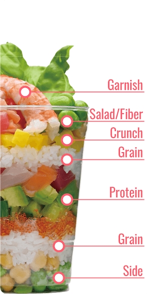

今回皆さんに紹介するのは、
カリフォルニア州アーバインにある
デリバリー＆ピックアップ専門の寿司ショップ、
[A Cup Of Sushi]というお店。
アメリカ風のお寿司[カリフォルニアロール]に
素材の味を大切にする日本の文化を織り込んで作られた
寿司カップ。
写真でみてもわかる通り、一つのカップに
たくさんの食材が入っています！
[A Cup Of Sushi]では、
「日本の伝統的な素材や味をアメリカンスタイルの寿司
と織り合わせること。」
そして、「忙しいライフスタイルを送っている人々に簡単に
食べてもらうこと」
をテーマにしていて、
見た目が映えるだけではなく、
「しっかりと栄養がとれて美味しい」
そんなメニューを目指して作られているそうです。
そして何より一番の特徴は、「カップ」に入っていること。
どこにでも持って行きやすく、さっと食べることが
できます。
ピクニックにも忙しい日のランチにもぴったりですよね🌸
ここでいくつかメニューの紹介を
してみようと思います🍣
Amarillo cupは南カリフォルニアの
太陽や明るい雰囲気からインスパイアされて
作られた一品。
中身はサーモンやマンゴー、チェリートマト。
きゅうりやアスパラなども入っています。
ビタミンDがたくさん含まれていて、一押しの
商品のようです🥭
こちらは海鮮系がメインの一品。
色合いもカラフルでカリフォルニアの雰囲気
が伝わって来ます！
中身はカニやわかめ、そして
定番のアボカドなど。
日本らしく海苔まで入っています！
最後に紹介するのは、ベジタリアンの人でも
美味しく食べられるハーベストカップ。
アボカド、枝豆、カリフラワー
そして山ごぼうまで野菜たっぷり。
健康的にお腹いっぱいになれそうですね！
今回は、[A Cop Of Sushi]という
新感覚のお寿司について紹介してみました。
カップ寿司は家でも楽しめると思います🍴
カップに好きな材料を入れて、オリジナルカップ寿司
をつくてみてはいかがでしょうか？
いつもと違うおうち時間を楽しんでみてください☺️